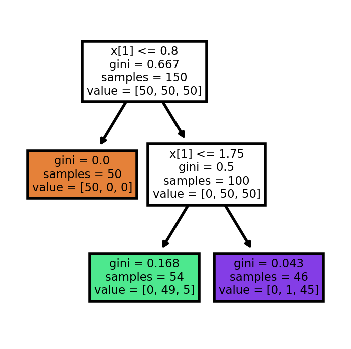
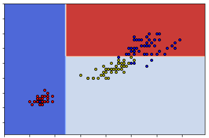
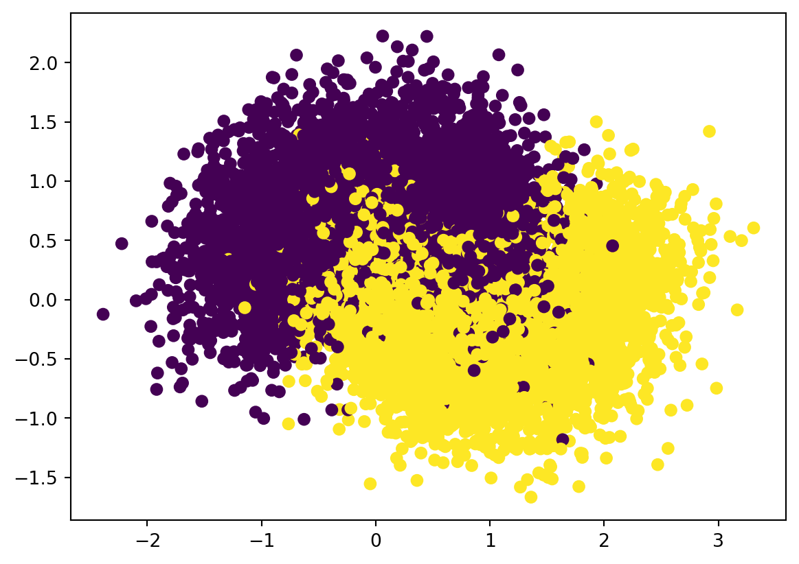
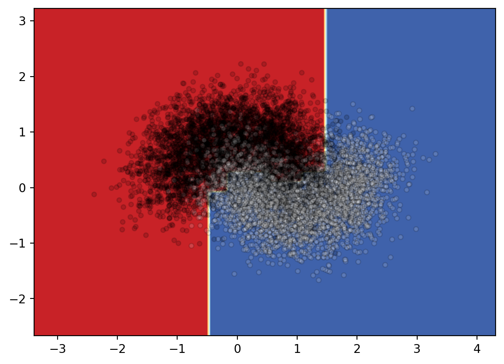
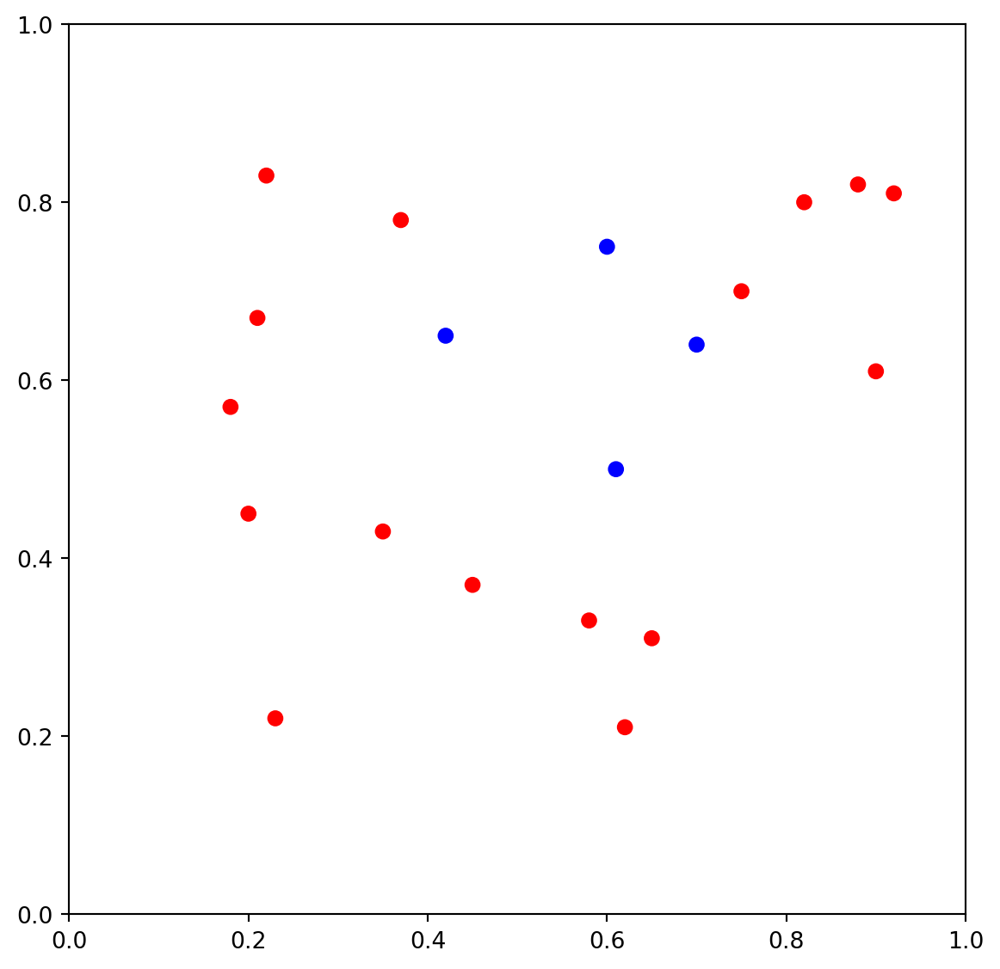

3 Decision Trees
Given a dataset with labels, the decision tree algorithm firstly trys to split the whole dataset into two different groups, based on some speicific features. Choose which feature to use and set the threshold for the split are done.
3.1 Gini impurity
To split a dataset, we need a metric to tell whether the split is good or not. The two most popular metrics that are used are Gini impurity and Entropy. The two metrics don’t have essential differences, that the results obtained by applying each metric are very similar to each other. Therefore we will only focus on Gini impurity since it is slightly easier to compute and slightly easier to explain.
3.1.1 Motivation and Definition
Assume that we have a dataset of totally \(n\) objects, and these objects are divided into \(k\) classes. The \(i\)-th class has \(n_i\) objects. Then if we randomly pick an object, the probability to get an object belonging to the \(i\)-th class is
\[ p_i=\frac{n_i}{n} \]
If we then guess the class of the object purely based on the distribution of each class, the probability that our guess is incorrect is
\[ 1-p_i = 1-\frac{n_i}{n}. \]
Therefore, if we randomly pick an object that belongs to the \(i\)-th class and randomly guess its class purely based on the distribution but our guess is wrong, the probability that such a thing happens is
\[ p_i(1-p_i). \]
Consider all classes. The probability at which any object of the dataset will be mislabelled when it is randomly labeled is the sum of the probability described above:
\[ \sum_{i=1}^kp_i(1-p_i)=\sum_{i=1}^kp_i-\sum_{i=1}^kp_i^2=1-\sum_{i=1}^kp_i^2. \]
This is the definition formula for the Gini impurity.
Definition 3.1 The Gini impurity is calculated using the following formula
\[ Gini = \sum_{i=1}^kp_i(1-p_i)=\sum_{i=1}^kp_i-\sum_{i=1}^kp_i^2=1-\sum_{i=1}^kp_i^2, \] where \(p_i\) is the probability of class \(i\).
The way to understand Gini impurity is to consider some extreme examples.
Example 3.1 Assume that we only have one class. Therefore \(k=1\), and \(p_1=1\). Then the Gini impurity is
\[ Gini = 1-1^2=0. \] This is the minimum possible Gini impurity. It means that the dataset is pure: all the objects contained are of one unique class. In this case, we won’t make any mistakes if we randomly guess the label.
Example 3.2 Assume that we have two classes. Therefore \(k=2\). Consider the distribution \(p_1\) and \(p_2\). We know that \(p_1+p_2=1\). Therefore \(p_2=1-p_1\). Then the Gini impurity is
\[ Gini(p_1) = 1-p_1^2-p_2^2=1-p_1^2-(1-p_1)^2=2p_1-2p_1^2. \] When \(0\leq p_1\leq 1\), this function \(Gini(p_1)\) is between \(0\) and \(0.5\). - It gets \(0\) when \(p_1=0\) or \(1\). In these two cases, the dataset is still a one-class set since the size of one class is \(0\). - It gets \(0.5\) when \(p_1=0.5\). This means that the Gini impurity is maximized when the size of different classes are balanced.
3.1.2 Algorithm
Inputs A dataset \(S=\{data=[features, label]\}\) with labels.
Outputs The Gini impurity of the dataset.
Get the size \(n\) of the dataset.
Go through the label list, and find all unique labels: \(uniqueLabelList\).
Go through each label \(l\) in \(uniqueLabelList\) and count how many elements belonging to the label, and record them as \(n_l\).
Use the formula to compute the Gini impurity:
\[ Gini = 1-\sum_{l\in uniqueLabelList}\left(\frac{n_l}{n}\right)^2. \]
The sample codes are listed below:
3.2 CART Algorithms
3.2.1 Ideas
Consider a labeled dataset \(S\) with totally \(m\) elements. We use a feature \(k\) and a threshold \(t_k\) to split it into two subsets: \(S_l\) with \(m_l\) elements and \(S_r\) with \(m_r\) elements. Then the cost function of this split is
\[ J(k, t_k)=\frac{m_l}mGini(S_l)+\frac{m_r}{m}Gini(S_r). \] It is not hard to see that the more pure the two subsets are the lower the cost function is. Therefore our goal is find a split that can minimize the cost function.
Inputs Given a labeled dataset \(S=\{[features, label]\}\).
Outputs A best split \((k, t_k)\).
- For each feature \(k\):
- For each value \(t\) of the feature:
- Split the dataset \(S\) into two subsets, one with \(k\leq t\) and one with \(k>t\).
- Compute the cost function \(J(k,t)\).
- Compare it with the current smallest cost. If this split has smaller cost, replace the current smallest cost and pair with \((k, t)\).
- For each value \(t\) of the feature:
- Return the pair \((k,t_k)\) that has the smallest cost function.
We then use this split algorithm recursively to get the decision tree.
Inputs Given a labeled dataset \(S=\{[features, label]\}\) and a maximal depth max_depth.
Outputs A decision tree.
- Starting from the original dataset \(S\). Set the working dataset \(G=S\).
- Consider a dataset \(G\). If \(Gini(G)\neq0\), split \(G\) into \(G_l\) and \(G_r\) to minimize the cost function. Record the split pair \((k, t_k)\).
- Now set the working dataset \(G=G_l\) and \(G=G_r\) respectively, and apply the above two steps to each of them.
- Repeat the above steps, until
max_depthis reached.
Here are the sample codes.
def split(G):
m = G.shape[0]
gmini = gini(G)
pair = None
if gini(G) != 0:
numOffeatures = G.shape[1] - 1
for k in range(numOffeatures):
for t in range(m):
Gl = G[G[:, k] <= G[t, k]]
Gr = G[G[:, k] > G[t, k]]
gl = gini(Gl)
gr = gini(Gr)
ml = Gl.shape[0]
mr = Gr.shape[0]
g = gl*ml/m + gr*mr/m
if g < gmini:
gmini = g
pair = (k, G[t, k])
Glm = Gl
Grm = Gr
res = {'split': True,
'pair': pair,
'sets': (Glm, Grm)}
else:
res = {'split': False,
'pair': pair,
'sets': G}
return resFor the purpose of counting labels, we also write a code to do so.
3.3 Decision Tree Project 1: the iris dataset
We are going to use the Decision Tree model to study the iris dataset. This dataset has already studied previously using k-NN. Again we will only use the first two features for visualization purpose.
3.3.1 Initial setup
Since the dataset will be splitted, we will put X and y together as a single variable S. In this case when we split the dataset by selecting rows, the features and the labels are still paired correctly.
We also print the labels and the feature names for our convenience.
from sklearn.datasets import load_iris
import numpy as np
from assests.codes.dt import gini, split, countlabels
iris = load_iris()
X = iris.data[:, 2:]
y = iris.target
y = y.reshape((y.shape[0],1))
S = np.concatenate([X,y], axis=1)
print(iris.target_names)
print(iris.feature_names)['setosa' 'versicolor' 'virginica']
['sepal length (cm)', 'sepal width (cm)', 'petal length (cm)', 'petal width (cm)']3.3.2 Apply CART manually
We apply split to the dataset S.
r = split(S)
if r['split'] is True:
Gl, Gr = r['sets']
print(r['pair'])
print('The left subset\'s Gini impurity is {g:.2f},'.format(g=gini(Gl)),
' and its label counts is {d:}'.format(d=countlabels(Gl)))
print('The right subset\'s Gini impurity is {g:.2f},'.format(g=gini(Gr)),
' and its label counts is {d}'.format(d=countlabels(Gr)))(0, 1.9)
The left subset's Gini impurity is 0.00, and its label counts is {0.0: 50}
The right subset's Gini impurity is 0.50, and its label counts is {1.0: 50, 2.0: 50}The results shows that S is splitted into two subsets based on the 0-th feature and the split value is 1.9.
The left subset is already pure since its Gini impurity is 0. All elements in the left subset is label 0 (which is setosa). The right one is mixed since its Gini impurity is 0.5. Therefore we need to apply split again to the right subset.
r = split(Gr)
if r['split'] is True:
Grl, Grr = r['sets']
print(r['pair'])
print('The left subset\'s Gini impurity is {g:.2f},'.format(g=gini(Grl)),
' and its label counts is {d:}'.format(d=countlabels(Grl)))
print('The right subset\'s Gini impurity is {g:.2f},'.format(g=gini(Grr)),
' and its label counts is {d}'.format(d=countlabels(Grr)))(1, 1.7)
The left subset's Gini impurity is 0.17, and its label counts is {1.0: 49, 2.0: 5}
The right subset's Gini impurity is 0.04, and its label counts is {2.0: 45, 1.0: 1}This time the subset is splitted into two more subsets based on the 1-st feature and the split value is 1.7. The total Gini impurity is minimized using this split.
The decision we created so far can be described as follows:
- Check the first feature
sepal length (cm)to see whether it is smaller or equal to1.9.- If it is, classify it as lable
0which issetosa. - If not, continue to the next stage.
- If it is, classify it as lable
- Check the second feature
sepal width (cm)to see whether it is smaller or equal to1.7.- If it is, classify it as label
1which isversicolor. - If not, classify it as label
2which isvirginica.
- If it is, classify it as label
3.3.3 Use package sklearn
Now we would like to use the decision tree package provided by sklearn. The process is straightforward. The parameter random_state=40 will be discussed {ref}later<note-random_state>, and it is not necessary in most cases.
from sklearn import tree
clf = tree.DecisionTreeClassifier(max_depth=2, random_state=40)
clf.fit(X, y)DecisionTreeClassifier(max_depth=2, random_state=40)In a Jupyter environment, please rerun this cell to show the HTML representation or trust the notebook.
On GitHub, the HTML representation is unable to render, please try loading this page with nbviewer.org.
DecisionTreeClassifier(max_depth=2, random_state=40)
sklearn provide a way to automatically generate the tree view of the decision tree. The code is as follows.
import matplotlib.pyplot as plt
plt.figure(figsize=(2, 2), dpi=200)
tree.plot_tree(clf, filled=True, impurity=True)[Text(0.4, 0.8333333333333334, 'x[1] <= 0.8\ngini = 0.667\nsamples = 150\nvalue = [50, 50, 50]'),
Text(0.2, 0.5, 'gini = 0.0\nsamples = 50\nvalue = [50, 0, 0]'),
Text(0.6, 0.5, 'x[1] <= 1.75\ngini = 0.5\nsamples = 100\nvalue = [0, 50, 50]'),
Text(0.4, 0.16666666666666666, 'gini = 0.168\nsamples = 54\nvalue = [0, 49, 5]'),
Text(0.8, 0.16666666666666666, 'gini = 0.043\nsamples = 46\nvalue = [0, 1, 45]')]
Similar to k-NN, we may use sklearn.inspection.DecisionBoundaryDisplay to visualize the decision boundary of this decision tree.
3.3.4 Analyze the differences between the two methods
The tree generated by sklearn and the tree we got manually is a little bit different. Let us explore the differences here.
To make it easier to split the set, we could convert the numpy.ndarray to pandas.DataFrame.
| 0 | 1 | |
|---|---|---|
| 0 | 1.4 | 0.2 |
| 1 | 1.4 | 0.2 |
| 2 | 1.3 | 0.2 |
| 3 | 1.5 | 0.2 |
| 4 | 1.4 | 0.2 |
Now based on our tree, we would like to get all data points that the first feature (which is marked as 0) is smaller or equal to 1.9. We save it as df1. Similarly based on the tree gotten from sklearn, we would like to get all data points taht the second feature (which is marked as 1) is smaller or equal to 0.8 and save it to df2.
Then we would like to compare these two dataframes. What we want is to see whether they are the same regardless the order. One way to do this is to sort the two dataframes and then compare them directly.
To sort the dataframe we use the method DataFrame.sort_values. The details can be found here. Note that after sort_values we apply reset_index to reset the index just in case the index is massed by the sort operation.
Then we use DataFrame.equals to check whether they are the same.
df1sorted = df1.sort_values(by=df1.columns.tolist()).reset_index(drop=True)
df2sorted = df2.sort_values(by=df2.columns.tolist()).reset_index(drop=True)
print(df1sorted.equals(df2sorted))TrueSo these two sets are really the same. The reason this happens can be seen from the following two graphs.


sklearnSo you can see that either way can give us the same classification. This means that given one dataset the construction of the decision tree might be random at some points.
Since the split is random, when using sklearn.DecisionTreeClassifier to construct decision trees, sometimes we might get the same tree as what we get from our naive codes.
To illustrate this phenomenaon I need to set the random state in case it will generate the same tree as ours when I need it to generate a different tree. The parameter random_state=40 mentioned before is for this purpose.
Another difference is the split value of the second branch. In our case it is 1.7 and in sklearn case it is 1.75. So after we get the right subset from the first split (which is called dfr), we would split it into two sets based on whether the second feature is above or below 1.7.
dfr = df[df[0]>1.9]
df2a = dfr[dfr[1]>1.7]
df2b = dfr[dfr[1]<=1.7]
print(df2b[1].max())
print(df2a[1].min())1.7
1.8Now you can see where the split number comes from. In our code, when we found a split, we will directly use that number as the cut. In this case it is 1.7.
In sklearn, when it finds a split, the algorithm will go for the middle of the gap as the cut. In this case it is (1.7+1.8)/2=1.75.
3.4 Decision Tree Project 2: make_moons dataset
sklearn includes various random sample generators that can be used to build artificial datasets of controlled size and complexity. We are going to use make_moons in this section. More details can be found here.
make_moons generate 2d binary classification datasets that are challenging to certain algorithms (e.g. centroid-based clustering or linear classification), including optional Gaussian noise. make_moons produces two interleaving half circles. It is useful for visualization.
Let us explorer the dataset first.
from sklearn.datasets import make_moons
import matplotlib.pyplot as plt
X, y = make_moons(n_samples=10000, noise=0.4, random_state=42)
plt.scatter(x=X[:, 0], y=X[:, 1], c=y)
Now we are applying sklearn.DecisionTreeClassifier to construct the decision tree. The steps are as follows.
- Split the dataset into training data and test data.
- Construct the pipeline. Since we won’t apply any transformers there for this problem, we may just use the classifier
sklearn.DecisionTreeClassifierdirectly without really construct the pipeline object. - Consider the hyperparameter space for grid search. For this problme we choose
min_samples_splitandmax_leaf_nodesas the hyperparameters we need. We will letmin_samples_splitrun through 2 to 5, andmax_leaf_nodesrun through 2 to 50. We will usegrid_search_cvto find the best hyperparameter for our model. For cross-validation, the number of split is set to be3which means that we will run trainning 3 times for each pair of hyperparameters. - Run
grid_search_cv. Find the best hyperparameters and the best estimator. Test it on the test set to get the accuracy score.
# Step 3
from sklearn.model_selection import GridSearchCV
from sklearn.tree import DecisionTreeClassifier
import numpy as np
params = {'min_samples_split': list(range(2, 5)),
'max_leaf_nodes': list(range(2, 50))}
grid_search_cv = GridSearchCV(DecisionTreeClassifier(random_state=42),
params, verbose=1, cv=3)
grid_search_cv.fit(X_train, y_train)Fitting 3 folds for each of 144 candidates, totalling 432 fitsGridSearchCV(cv=3, estimator=DecisionTreeClassifier(random_state=42),
param_grid={'max_leaf_nodes': [2, 3, 4, 5, 6, 7, 8, 9, 10, 11, 12,
13, 14, 15, 16, 17, 18, 19, 20, 21,
22, 23, 24, 25, 26, 27, 28, 29, 30,
31, ...],
'min_samples_split': [2, 3, 4]},
verbose=1)In a Jupyter environment, please rerun this cell to show the HTML representation or trust the notebook. On GitHub, the HTML representation is unable to render, please try loading this page with nbviewer.org.
GridSearchCV(cv=3, estimator=DecisionTreeClassifier(random_state=42),
param_grid={'max_leaf_nodes': [2, 3, 4, 5, 6, 7, 8, 9, 10, 11, 12,
13, 14, 15, 16, 17, 18, 19, 20, 21,
22, 23, 24, 25, 26, 27, 28, 29, 30,
31, ...],
'min_samples_split': [2, 3, 4]},
verbose=1)DecisionTreeClassifier(random_state=42)
DecisionTreeClassifier(random_state=42)
# Step 4
from sklearn.metrics import accuracy_score
clf = grid_search_cv.best_estimator_
print(grid_search_cv.best_params_)
y_pred = clf.predict(X_test)
accuracy_score(y_pred, y_test){'max_leaf_nodes': 17, 'min_samples_split': 2}0.8695Now you can see that for this make_moons dataset, the best decision tree should have at most 17 leaf nodes and the minimum number of samples required to be at a leaft node is 2. The fitted decision tree can get 86.95% accuracy on the test set.
Now we can plot the decision tree and the decision surface.
[Text(0.5340909090909091, 0.9375, 'x[1] <= 0.296\ngini = 0.5\nsamples = 8000\nvalue = [3987, 4013]'),
Text(0.25, 0.8125, 'x[0] <= -0.476\ngini = 0.367\nsamples = 4275\nvalue = [1036, 3239]'),
Text(0.09090909090909091, 0.6875, 'x[0] <= -0.764\ngini = 0.183\nsamples = 472\nvalue = [424, 48]'),
Text(0.045454545454545456, 0.5625, 'gini = 0.035\nsamples = 333\nvalue = [327, 6]'),
Text(0.13636363636363635, 0.5625, 'x[1] <= 0.047\ngini = 0.422\nsamples = 139\nvalue = [97, 42]'),
Text(0.09090909090909091, 0.4375, 'gini = 0.496\nsamples = 70\nvalue = [38, 32]'),
Text(0.18181818181818182, 0.4375, 'gini = 0.248\nsamples = 69\nvalue = [59, 10]'),
Text(0.4090909090909091, 0.6875, 'x[1] <= -0.062\ngini = 0.27\nsamples = 3803\nvalue = [612, 3191]'),
Text(0.3181818181818182, 0.5625, 'x[1] <= -0.371\ngini = 0.147\nsamples = 2426\nvalue = [194, 2232]'),
Text(0.2727272727272727, 0.4375, 'gini = 0.079\nsamples = 1336\nvalue = [55, 1281]'),
Text(0.36363636363636365, 0.4375, 'gini = 0.223\nsamples = 1090\nvalue = [139, 951]'),
Text(0.5, 0.5625, 'x[0] <= 1.508\ngini = 0.423\nsamples = 1377\nvalue = [418, 959]'),
Text(0.45454545454545453, 0.4375, 'x[0] <= 0.503\ngini = 0.48\nsamples = 1013\nvalue = [404, 609]'),
Text(0.36363636363636365, 0.3125, 'x[0] <= -0.162\ngini = 0.417\nsamples = 469\nvalue = [139, 330]'),
Text(0.3181818181818182, 0.1875, 'gini = 0.5\nsamples = 120\nvalue = [61, 59]'),
Text(0.4090909090909091, 0.1875, 'gini = 0.347\nsamples = 349\nvalue = [78, 271]'),
Text(0.5454545454545454, 0.3125, 'x[0] <= 1.1\ngini = 0.5\nsamples = 544\nvalue = [265, 279]'),
Text(0.5, 0.1875, 'x[1] <= 0.129\ngini = 0.49\nsamples = 339\nvalue = [193, 146]'),
Text(0.45454545454545453, 0.0625, 'gini = 0.498\nsamples = 178\nvalue = [84, 94]'),
Text(0.5454545454545454, 0.0625, 'gini = 0.437\nsamples = 161\nvalue = [109, 52]'),
Text(0.5909090909090909, 0.1875, 'gini = 0.456\nsamples = 205\nvalue = [72, 133]'),
Text(0.5454545454545454, 0.4375, 'gini = 0.074\nsamples = 364\nvalue = [14, 350]'),
Text(0.8181818181818182, 0.8125, 'x[0] <= 1.452\ngini = 0.329\nsamples = 3725\nvalue = [2951, 774]'),
Text(0.7272727272727273, 0.6875, 'x[1] <= 0.757\ngini = 0.232\nsamples = 3355\nvalue = [2905, 450]'),
Text(0.6818181818181818, 0.5625, 'x[0] <= -0.588\ngini = 0.349\nsamples = 1629\nvalue = [1262, 367]'),
Text(0.6363636363636364, 0.4375, 'gini = 0.07\nsamples = 384\nvalue = [370, 14]'),
Text(0.7272727272727273, 0.4375, 'x[1] <= 0.439\ngini = 0.406\nsamples = 1245\nvalue = [892, 353]'),
Text(0.6818181818181818, 0.3125, 'gini = 0.477\nsamples = 420\nvalue = [255, 165]'),
Text(0.7727272727272727, 0.3125, 'gini = 0.352\nsamples = 825\nvalue = [637, 188]'),
Text(0.7727272727272727, 0.5625, 'gini = 0.092\nsamples = 1726\nvalue = [1643, 83]'),
Text(0.9090909090909091, 0.6875, 'x[0] <= 1.782\ngini = 0.218\nsamples = 370\nvalue = [46, 324]'),
Text(0.8636363636363636, 0.5625, 'gini = 0.416\nsamples = 132\nvalue = [39, 93]'),
Text(0.9545454545454546, 0.5625, 'gini = 0.057\nsamples = 238\nvalue = [7, 231]')]
from sklearn.inspection import DecisionBoundaryDisplay
DecisionBoundaryDisplay.from_estimator(
clf,
X,
cmap=plt.cm.RdYlBu,
response_method="predict"
)
plt.scatter(
X[:, 0],
X[:, 1],
c=y,
cmap='gray',
edgecolor="black",
s=15,
alpha=.15)
Since it is not very clear what the boundary looks like, I will draw the decision surface individually below.
3.5 Exercises and Projects
Exercise 3.1 The dataset and its scattering plot is given below.
- Please calculate the Gini impurity of the whole set by hand.
- Please apply CART to create the decision tree by hand.
- Please use the tree you created to classify the following points:
- \((0.4, 1.0)\)
- \((0.6, 1.0)\)
- \((0.6, 0)\)
The following code is for ploting. You may also get the precise data points by reading the code. You don’t need to write codes to solve the problem.

Exercise 3.2 CHOOSE ONE: Please apply the Decision Tree to one of the following datasets.
- dating dataset (in Chpater 2).
- the
titanicdataset.
Please answer the following questions.
- Please use grid search to find the good
max_leaf_nodesandmax_depth. - Please record the accuracy (or cross-validation score) of your model and compare it with the models you learned before (kNN).
- Please find the two most important features and explane your reason.
- (Optional) Use the two most important features to draw the Decision Boundary if possible.